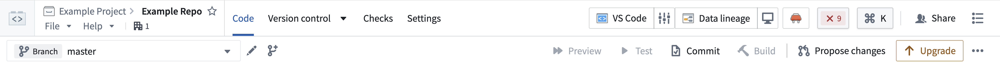
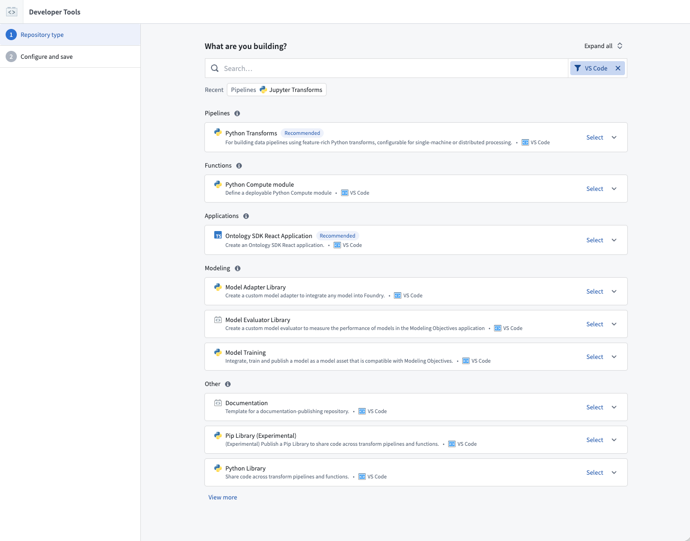
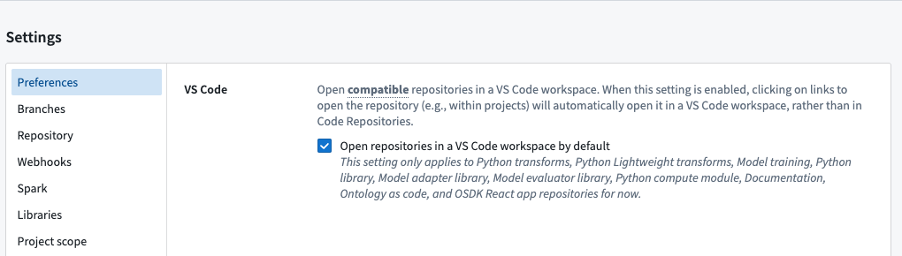
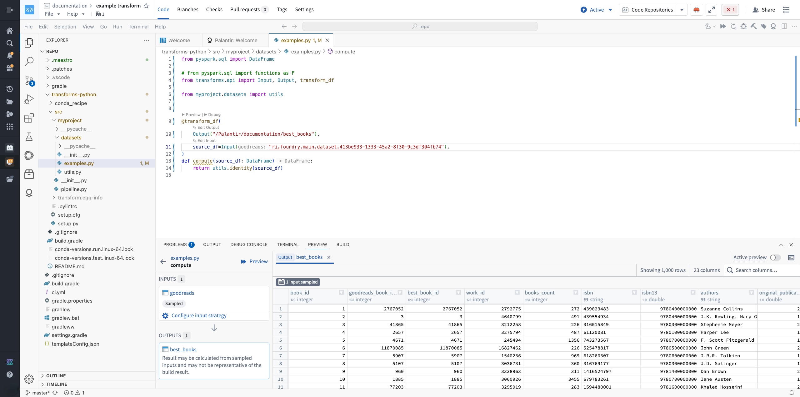
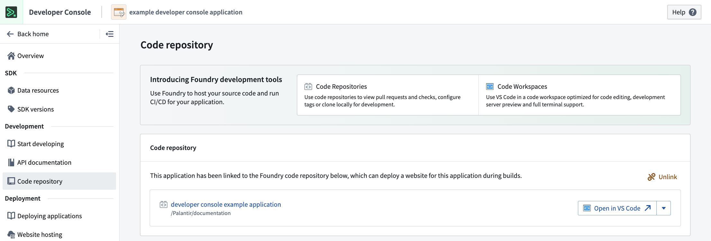
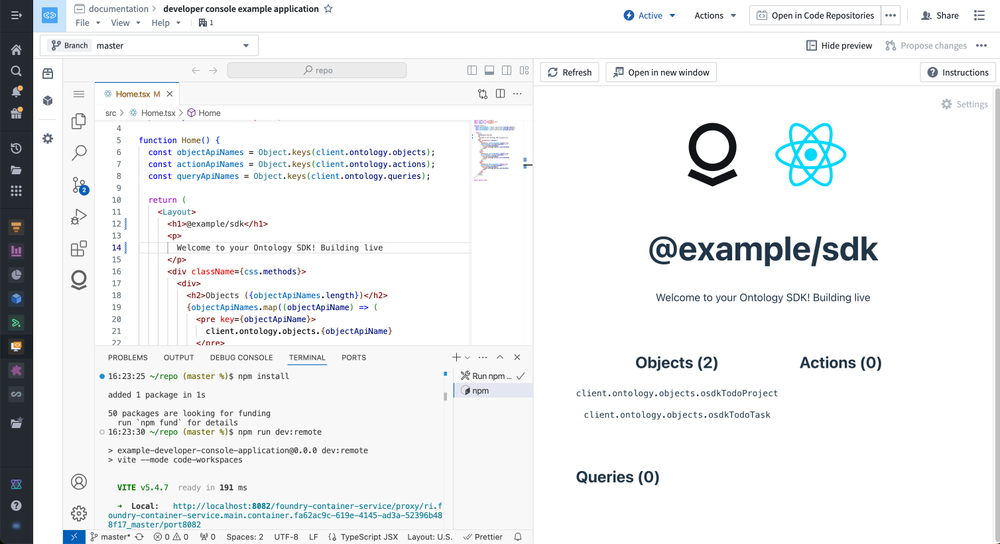

:::callout{theme="neutral"} VS Code workspaces and the Palantir extension for Visual Studio Code are not affiliated with or endorsed by Microsoft. :::
:::callout{theme="neutral"} VS Code workspaces is available by default in all Organizations where Code Workspaces is enabled. :::
VS Code workspaces bring the power of Microsoft's VS Code â IDE directly into the Palantir platform. VS Code workspaces are development environments deployed on Palantir infrastructure that leverage Code Workspaces to provide an integrated development environment (IDE) for writing production-ready code. Whether you are building Python transforms, developing OSDK React applications, or working on compute modules (see a full list of supported workflows here), VS Code workspaces provide a familiar, powerful environment with automatic environment setup and seamless integration with Foundry resources.
Learn more about the benefits of VS Code workspaces.


You can make VS Code your default code editor for all supported repository types by navigating to the Settings tab within any repository and selecting Open repositories in a VS Code workspace by default.

Note that some repositories will open in VS Code regardless of the default setting, since these repository types have been optimized for VS Code workspaces.
VS Code workspaces support the workflows described in the sections below.
The Palantir extension automatically sets up your Python environment at startup and provides the following:

Learn more about Python transforms.
VS Code is integrated with Developer Console, allowing you to rapidly build React applications. You can create a VS Code workspace in the Code repository section of your Developer Console.

Key features include:

Learn more about OSDK React applications.
VS Code and Code Repositories serve different primary purposes:
Code Repositories: A Palantir-built IDE focused on all code-management needs, including editing, version control, change management, and continuous integration. This is the intended platform tool for pull request reviews and repository management.
VS Code: A VS Code environment deployed on Palantir infrastructure and accessible from the Palantir platform. Provides the familiar VS Code editing experience with automatic environment setup and integration with Foundry resources through the Palantir extension for Visual Studio Code.
Palantir extension for Visual Studio Code (local): An extension you install in your local VS Code application to integrate directly with Foundry. Provides preview, debug, and build capabilities for Python transforms while working on your local machine.
| Feature | Code Repositories | VS Code workspaces | Palantir extension for Visual Studio Code |
|---|---|---|---|
| Transforms | |||
| Python transform preview | Yes | Yes | Yes |
| Full data preview | Preview data sample, with the ability to pre-filter the input sample | Yes | Yes |
| Debugger support | Yes | Yes | Yes |
| Java transforms | Yes | No | No |
| Unit tests | Yes | Yes | Yes |
| OSDK React applications | |||
| Typescript Language Server | No | Yes | Yes |
| Live reload code changes | No | Yes | Yes |
| Python compute modules | |||
| Run and debug Python files | No | Yes | Yes |
| Python libraries | |||
| Run and debug Python files | No | Yes | Yes |
| Workflows | |||
| SQL integration | Yes | No | No |
| Typescript function preview | Yes | No | No |
| IDE | |||
| Shell terminal | No | Yes (Remote host) | Yes |
| Keybinding customization | No | Yes | Yes |
| Public extension support | N/A | No | Yes, if allowed by your organization |
| AI Assistance | AIP Autocomplete | Yes, Continue extension | No |
By default, when you open a stopped VS Code workspace, the code viewer opens while its workspace session starts in the background. You can browse committed code while the VS Code tab icon shows the workspace status. The code viewer remains open until you select the VS Code tab.
You have two options for using VS Code with Foundry. For a detailed comparison to help you decide which is right for you, review our documentation on choosing between local development and VS Code workspaces.
The Palantir extension for Visual Studio Code provides native integrations with the Palantir platform, including many features you see in Code Repositories.
Learn more about the features of the Palantir extension.
For VS Code workspace pricing information see Code Workspaces compute usage.